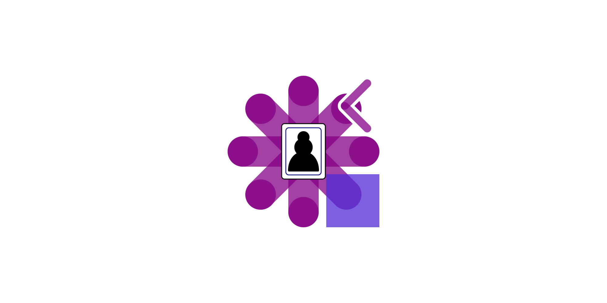
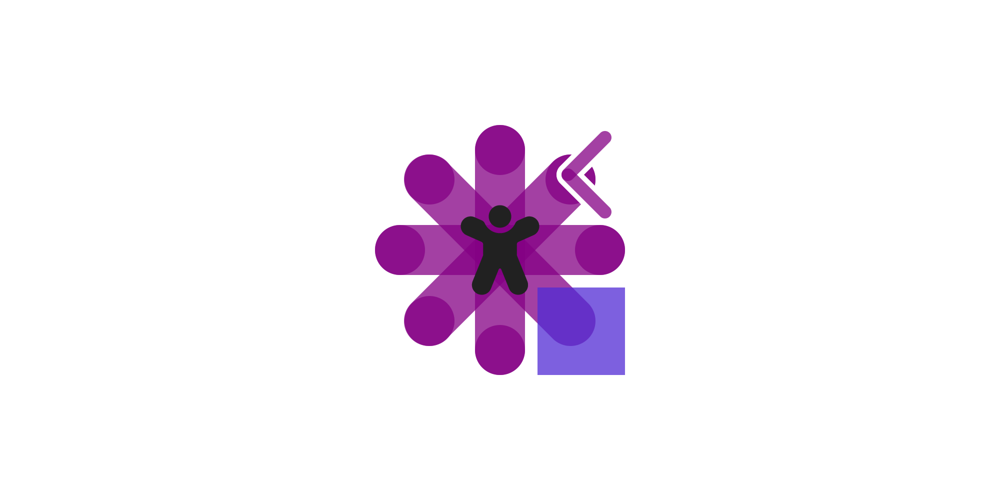
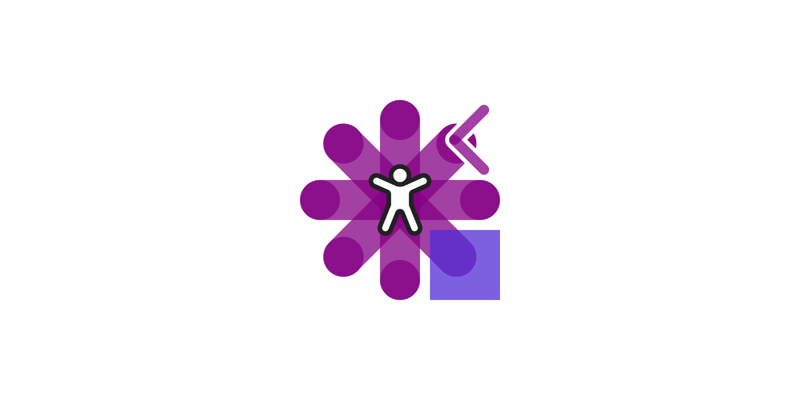

Comentsys.Assets.Games 2.0.0 Released
20th August 2025

Today also sees the Release of version 2.0.0 of my Assets package
of Comentsys.Assets.Games for .NET Standard 2.0 on both NuGet and open-source on
GitHub. This Release adds new Asset Resources including
Playing Cards as well as original designs for Dice, Dominoes, Piece and Board allowing
a variety of Games to be supported. There is also updated Documentation featuring Examples of the new and existing Asset Resources.
Comentsys.Assets.Flags 2.0.0 Released
20th August 2025
Today also sees the Release of version 2.0.0 of my Assets package
of Comentsys.Assets.Flags for .NET Standard 2.0 on both NuGet and open-source on
GitHub. This Release updates most of the Flags with improvements
from github.com/lipis/flag-icons as well as adding missing Flags. This version introduces Metadata
for Flags which includes the Name of the Country and Code such as "us" making it even
easier to locate Flags along with including Capital and Continent information where available for Flags.
Comentsys.Assets.FluentIcons.Filled 2.0.0 Released
20th August 2025

Today also sees the Release of version 2.0.0 of my Assets package
of Comentsys.Assets.FluentIcons.Filled for .NET Standard 2.0 on both NuGet and open-source on
GitHub. This Release adds many new Filled versions of the
Fluent UI System Icons from Microsoft including Animal Paw Print,
Barcode Scanner Add, Circle Sparkle, Flow Sparkle, Mic Link, Planet, Video USB
and more along with fixes including Apps Addin, Coin Multiple, Data Pie, People Community, Zoom Out
and more. This package references the updated Comentsys.Assets.FluentIcons enabling access to the new Metadata for all Icons.
Comentsys.Assets.FluentIcons 2.0.0 Released
20th August 2025

Today sees the Release of version 2.0.0 of my Assets package
of Comentsys.Assets.FluentIcons for .NET Standard 2.0 on both NuGet and open-source on
GitHub. This Release adds many new Regular versions of the
Fluent UI System Icons from Microsoft including Agents, Brain, Flow Dot, Pen Sync, Tag Edit,
Video Settings and more along with fixes including Brain Circuit, Chart Multiple, Design Ideas,
Pause Circle, Zoom Out and more. This version introduces Metadata for Icons which includes
Name, Keywords and Direction information indicating Right-to-Left and Left-to-Right usage.
RoguePlanetoid Weekly Update #85
4th August 2025

Last week it was great to hold the True Crime special of Podcast Paddock, we had amazing speakers there and was
an informative and interesting conversation with those there with just fireside chats after our introduction which was a first. If you want to
find details of our next event when it is posted then visit cluarantonn.com.
It was also great this week to go along to another Silicon Mingle and speak to a few of the people there, which is where I was encouraged to go
along to Software Crafters Newcastle - Solutions Shop
so am looking forward to that as went along to some of the initial sessions but haven't had a chance to go along again so am looking forward to that
later this month!
Recently I've been making the most of any opportunities to hear about things as part of the Microsoft Most Valuable Professionals
but can't share any of that here unfortunately, at least until it becomes public! However, it was great to see an announcement I can talk about which is the phased
approach to open-sourcing WinUI, which is the user interface component of Windows App SDK which is used to create native Windows
applications. This will be an amazing opportunity for developers to see what's coming, raise issues and contribute to the platform, you can read more about this in my
Article on WinUI rollout towards open collaboration.
This week it was great to see myself added to Cush as one of the Mentors
offering my help, guidance and support where my aim is to empower everyone to get the best start or continuation of their career in software
development. My hope is that my own experiences will help others, especially those who may have previously faced difficulties, to help them in
their career in software development including .NET as well as helping to prepare for interviews or any other way I can help!
RoguePlanetoid Podcast - Episode Thirty - Microsoft Most Valuable Professional
1st August 2025

Today sees the release of Episode Thirty of the RoguePlanetoid Podcast
about Microsoft Most Valuable Professional, I'm proud and honoured to be
recognised as a Microsoft Most Valuable Professional for my expertise and influence in the community with .NET
and Windows.
You will find the Podcast where you listen to your podcasts such as Spotify,
Amazon Music, RadioPublic, Apple Podcasts, Pandora,
YouTube Music along with YouTube where you can catch up with previous episodes
and Subscribe or Follow so you don't miss any future Episodes.